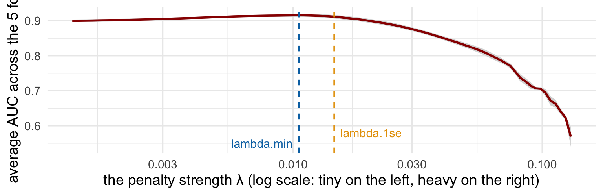
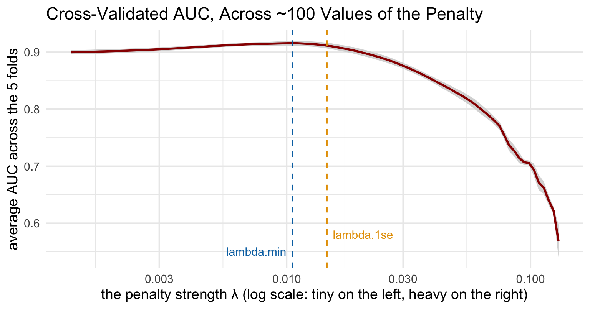
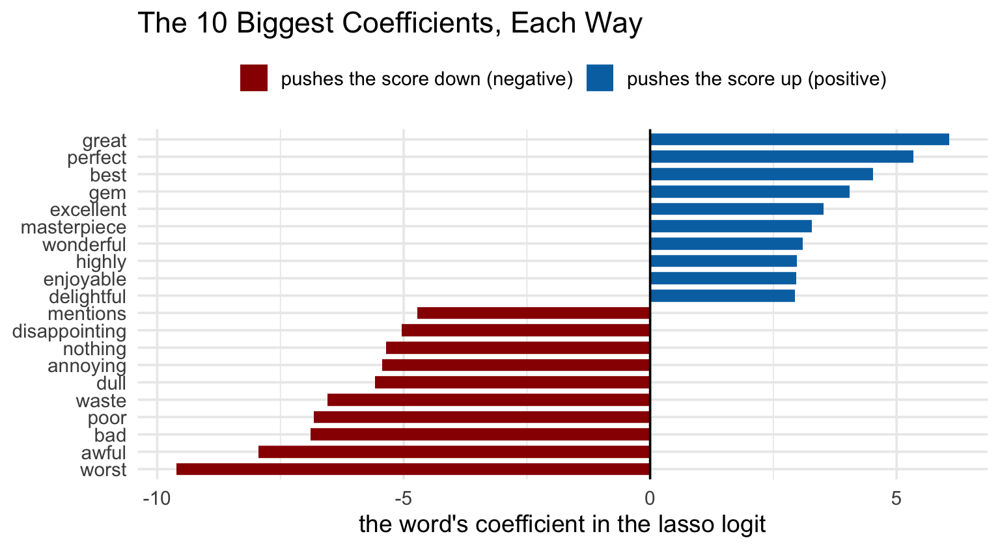
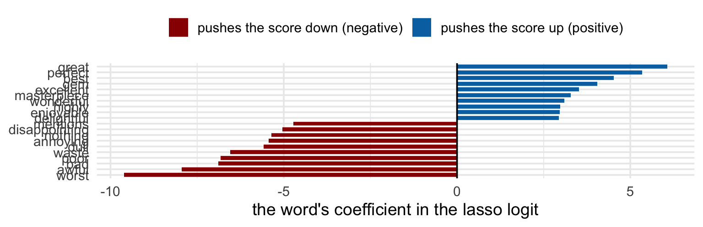

MKT 566 · Fall 2026
USC Marshall School of Business
| Step | Status |
|---|---|
| 1. Label each review positive or negative | done: the data comes labeled |
| 2. Vectorize: the TF-IDF matrix | done Tuesday |
| 3. Split into train and test | week 9 machinery |
| 4. Classify: a logit on the word columns | today |
| 5. Evaluate on the test set | today, AUC and accuracy |
The number to beat: Tuesday’s dictionary (sentimentr), which needs no training data. On today’s test reviews it gets 71% accuracy. If training a model does not beat that, why bother?
Build Tuesday’s TF-IDF matrix on the training reviews and count:
Week 5’s logit was built for a handful of columns. Nothing in it says what to do when the columns outnumber the rows. Something has to give.
We ran that logit, with no guardrails, on the 6,731-column matrix. Here is its report card:
| Training reviews | Test reviews (never seen) | |
|---|---|---|
| Accuracy | 100% | 83% |
| AUC | 1.000 | 0.909 |
Make the model pay a price for every coefficient it uses. Instead of minimizing only its mistakes, it now minimizes:
\[\text{Loss} \;=\; \text{how wrong the predictions are} \;+\; \lambda \times \text{how big the coefficients are}\]
\[\text{Loss} \;=\; \text{DataFit} \;+\; \lambda \left[\, \alpha \,\|\beta\|_1 \;+\; (1-\alpha)\,\|\beta\|_2^2 \,\right]\]
| Symbol | Name | In plain words |
|---|---|---|
| DataFit | the logit’s loss | how wrong the predictions are on the training data (what week 5’s glm minimized) |
| \(\beta\) | the coefficients | one per word: how much that word moves the score |
| \(\|\beta\|_1\) | sum of absolute values | the lasso penalty: every nonzero coefficient costs |
| \(\|\beta\|_2^2\) | sum of squares | the ridge penalty: big coefficients cost extra |
| \(\lambda\) | penalty strength | the price dial: 0 = free, huge = everything forced to zero |
| \(\alpha\) | the mix | 1 = pure lasso, 0 = pure ridge, in between = elastic net |
Two dials to set, and only two: α (which penalty) and λ (how strong).
| Lasso (α = 1) | Ridge (α = 0) | Elastic net (0 < α < 1) | |
|---|---|---|---|
| What it does to coefficients | pushes many to exactly zero | shrinks all toward zero, none exactly | a mix of both |
| What you get | a short list of words that matter | every word keeps a small say | a compromise |
| Pick it when | you believe few features carry the signal | you believe many features each matter a little | you are not sure (α = 0.5 is a common default) |
cv.glmnet(X, y, family = "binomial", type.measure = "auc", nfolds = 5, alpha = 1) tries about 100 values of λ and does all the folding for youThe test set is not touched during any of this. It stays in the vault until the very end, exactly like week 9.
Everything below ran live when this deck was built (the class script has the code):
| Step | What we did | Guardrail |
|---|---|---|
| 1. Split | 80% train (4,000), 20% test (1,000), seed 123 | test set in the vault |
| 2. Tokenize | lowercase, split into words | same as Tuesday |
| 3. Vocabulary | all words from the training reviews only | the test set must not shape the features |
| 4. Prune | drop words seen < 10 times: 37,936 → 6,731 | can’t learn from 3 examples |
| 5. TF-IDF | weights fit on train, then applied to both | no leakage |
| 6. Model | cv.glmnet(...), lasso, 5-fold CV on AUC |
λ chosen by CV, not by us |
Note how many of the guardrails are week 9 rules, not new text rules. Text changed the features; the discipline is unchanged.

One point per candidate λ: the average AUC over the 5 folds (grey band: ± one standard error). What happens at the two ends, and where would you set the dial?

cv.glmnet marks two choices: lambda.min (blue), the λ with the best average AUC, and lambda.1se (gold), the heaviest penalty still within one standard error of the best: a “just as good, but simpler” optionAll four scored on the same 1,000 test reviews none of them saw:
| Model | Needs labeled data? | AUC | Accuracy |
|---|---|---|---|
| Coin flip | no | 0.500 | 50% |
| Tuesday’s dictionary (sentimentr) | no | 0.824 | 71% |
| Logit, no penalty (λ ≈ 0) | yes | 0.909 | 83% |
| Lasso at lambda.min | yes | 0.927 | 85% |

The lasso’s largest surviving coefficients. A review’s score is, at heart, the sum of the coefficients of the words it contains. What do you recognize from Tuesday?

Week 5, the plain logit
This week, the regularized logit
Text classification, end to end:
cv.glmnet(..., family = "binomial", type.measure = "auc")The same seven steps run spam filters, support-ticket routers, and fake-review detectors. Only step 1 changes.
Teams, laptops out: w10-sentiment-analysis-game.R (also in w10-code.zip). Run the top of the script once, then call run_tfidf_experiment(dt, ...) with your own settings. One twist: in the game the labels come from Tuesday’s dictionary (that is how teams label text when nobody has labeled it for them).
| Knob | What it changes |
|---|---|
ngram_max = 2 |
add bigrams: “not_good” becomes its own feature |
remove_rare, term_count_min |
drop rare words (we used 10 today) |
remove_popular, doc_proportion_max |
drop words that are in almost every review |
l2_norm |
normalize each review’s TF-IDF row |
alpha |
1 = lasso, 0 = ridge, between = elastic net |
use_cv = TRUE / lambda_no_cv |
CV-chosen λ vs. a λ you set by hand |
The rules: do not touch the seed or the split. Highest test AUC wins; ties go to the smaller model. You have 25 minutes, then every team reports its best settings and we discuss why they won.
The code:
w10-code.zip: both class scripts + the gamew10-2-glmnet-class.R: today’s model, end to end, runnable line by lineThe arc so far: weeks 4-5 gave you regression and the logit, week 9 taught you to test models honestly, and this week text became just another input. Homework 4 is out today, due Nov. 19.
MKT 566 · Marketing Analytics